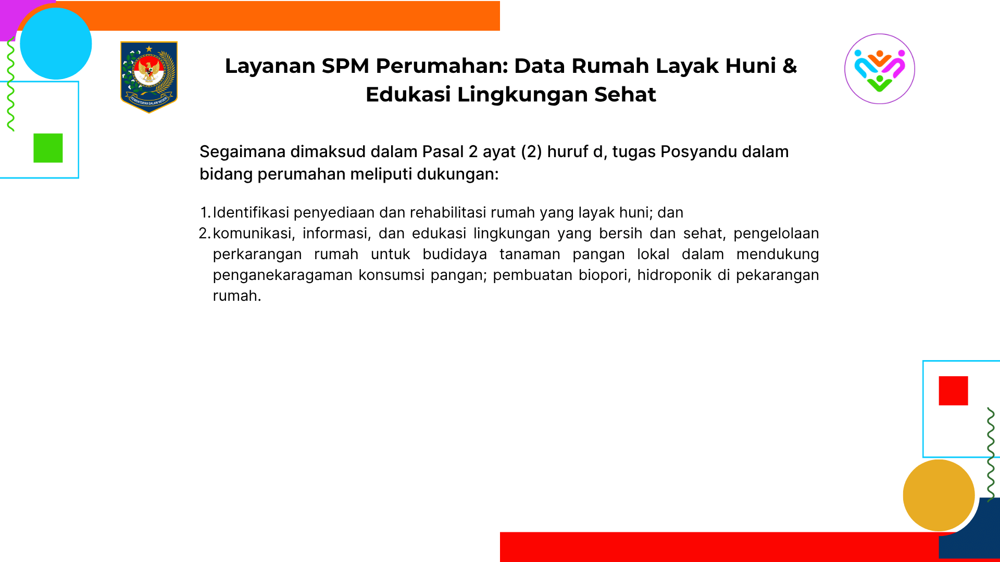

Standar Pelayanan: Perumahan Rakyat
SPM bidang perumahan menekankan hak setiap warga negara untuk tinggal di rumah yang layak, aman, dan sehat. Pemerintah daerah wajib mengidentifikasi rumah tidak layak huni dan membantu peningkatannya melalui program perbaikan.
Fokus Layanan Perumahan Rakyat
- • Pendataan Rumah Tidak Layak Huni (RTLH): Kader desa melakukan identifikasi kondisi rumah berdasarkan kriteria struktur bangunan, ventilasi, atap, lantai, dan sanitasi.
- • Penyusunan Prioritas Bantuan: Data RTLH digunakan untuk menentukan penerima bantuan program perumahan, baik dari Dana Desa, APBD, atau program nasional seperti BSPS (Bantuan Stimulan Perumahan Swadaya).
- • Pendampingan Pelaksanaan Rehabilitasi: Kader ikut memantau proses pembangunan agar sesuai standar teknis dan bantuan tepat sasaran.
- • Edukasi Kesehatan Hunian: Memberikan penyuluhan tentang pentingnya ventilasi, pencahayaan, dan kebersihan rumah untuk mencegah penyakit seperti ISPA dan TBC.
Jika ada pertanyaan lebih lanjut atau menemukan pelayanan yang tidak sesuai standar, silakan sampaikan pengaduan Anda melalui tombol di bawah ini.